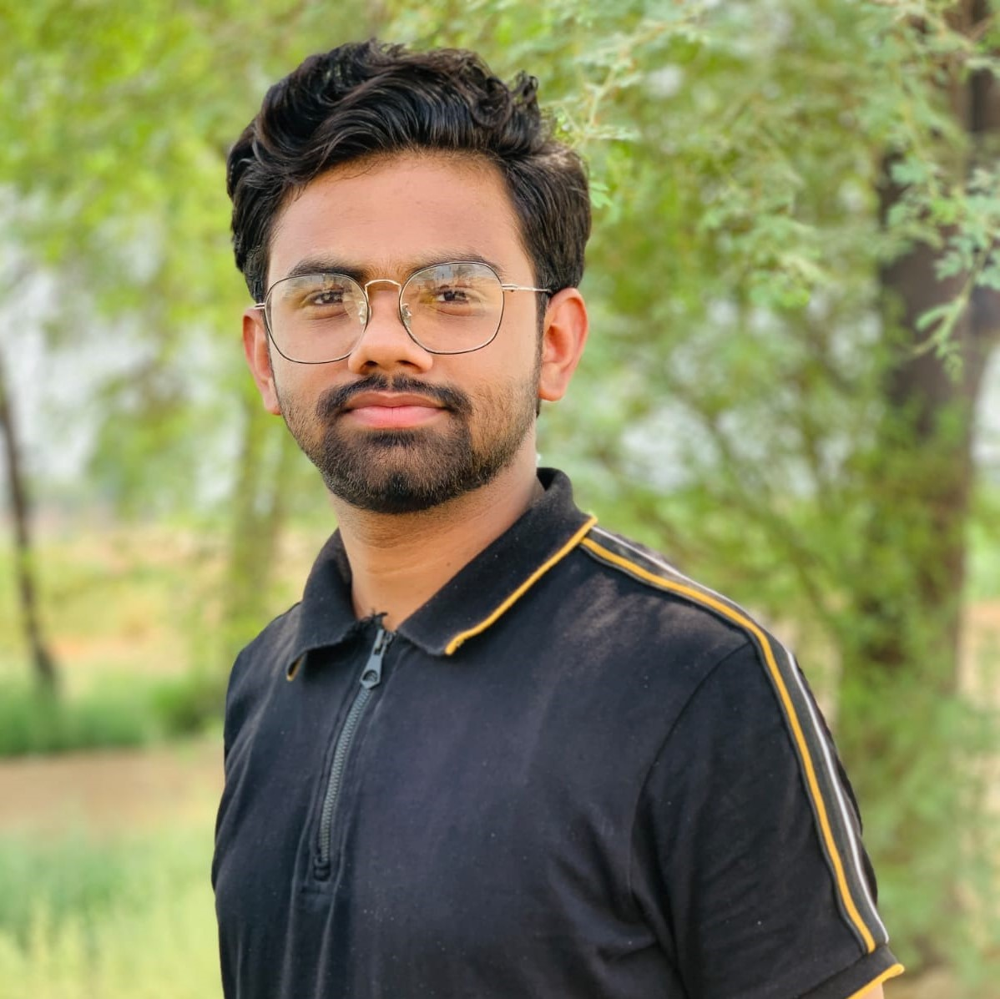

Dr. Sohail Iqbal
Professor — National University of Science and Technology (NUST)
Home
Research
Students
Projects
FAQ
Contact
Personal
Current Students

Muhammad Mubashir Zaman
Intern
BS — Computer Science
Muhammad Khizer Tariq
Intern
BS — Computer Science
MS Students Supervised
Taimur Hassan (An Optimized Design of Manipulator for Robotics Surgery)
Mehreen Shakoor (Optimized Control of Blood Glucose Level using Fuzzy Logic)
Khuram Shahzad (Safe Path Planning of Continuum Robot for Surgical Applications)
Shehzad Farooq (Information Security in Tele-Surgical Systems)
Aleena Qureshi (Visualization of Mathematical Concepts Using Innovative Technologies in Education)
Ali Gohar (Online Education Taxonomy and Analysis to Promote Pakistani Education)
Zafar Ullah (Improving Fuzzy Controller for Continuum Robot)
Tooba Samad (A Multi-Agent Framework for Cloud Based Management of Collaborative Robots)
Qurat-ul-Ain (User Comfort Enhancement in Home Energy Management Systems using Fuzzy Logic)
Furqan Naqvi (Air-Flow Analysis in Smart Buildings using Fuzzy Logic)
Saima Mehr (Exploring the Impact of DST on Student Learning & Engagement)
Zoha Rehman (Learning Science through Comics and Augmented Reality)
Adnan Bashir (A Cloud Based Disease Surveillance and Health Information System)
Hasnain Amin (Energy Management in Smart Homes with Electric Vehicles using Fuzzy Logic)
Uzair Kazim (Fuzzy time series for data analytics for optimal electricity consumption in residential area)
Kamran Khan (Optimal Charging Provision to Electric Transport by smart homes)
Syed Ali Hasan (Optimal Vehicle-to-Home Energy Management System in Smart Grid)
Aneeza Khalid (Optimal Solution for Price and Load Forecasting in Smart Grids)
Muneeb ur Rehman (Fuzzy Logic based Energy Management in Smart Charging Network for Electric Vehicles)
Jarar Haider (Hybrid Bayesian Network Structure Learning Using Parallel Learning Technique)
Moin-ud-Din (A Game Theoretical Approach for Effective Demand Side Management)
PhD Students in Supervision
Khuram Shahzad (An Energy Efficient Cloud based Framework for Smart Cities (Pre-defense conducted successfully))
Qurat-ul-Ain (Energy Optimization with Dynamic Task Scheduling exploiting Cloud-Fog Paradigm (PhD thesis completed and sent for foreign evaluation))
Saeed Ullah Safi (Data Analytics in Smart Grid using Machine Learning)